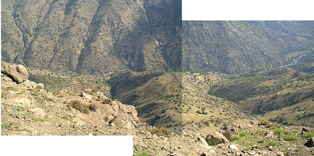
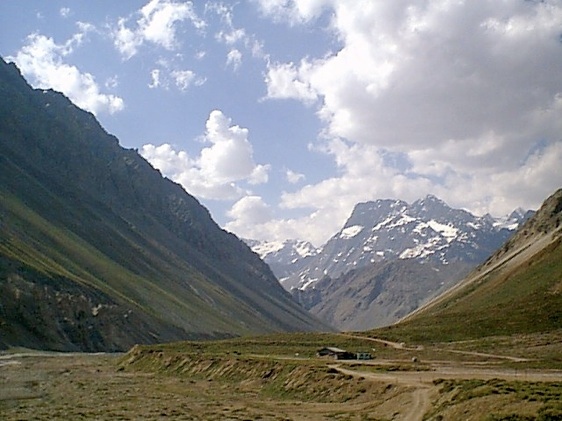
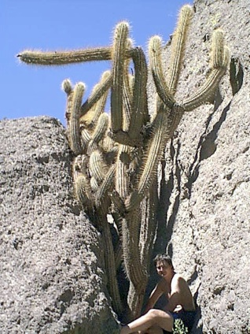

One day during our first week in Chile, Suzie and I, and our friends Sylvin, Cendrine and baby Paul drove up miles of twisty turny hairpin bends into the cordillera (Andes mountains). We ended up 3.5 km above sea level on top of a mountain surrounded by vast gaping valleys on all sides. I took a series of photos in an attempt to capture the panoramic view that surrounded us:


There were some wild horses that ran away, so no pics of them then, but there were lots of pretty flowers, so here's one for your (or my) Mum:
Here are some shots gazing down into the huge chasm of a valley below us. It must have been thousands of feet down. Very pretty, but I was too scared to go right to the edge. Suzie of course was pretending to throw herself off the cliff at every available opportunity, when she wasn't fiddling with her camera that is.

On the way back down the twisty road we stopped off at a small valley with a huge cactus (CACTUUUUUUUUUUSSSSS!!!!!!), and nearly ran over a massive tarantula like spider as it ran across the road. We almost caused an RTA as Suzie
leapt out of the car and ran after the poor arachnid in order to get the slightly fuzzy pics below.
On another day out (new years eve in fact!) we drove up to some hot springs, or
Banos Salinas. It was way up into Andes, past lots of snow capped peaks, and different coloured mountains. Due to the volcanic history of the local geology, the area is rich in metal ores, such as copper and iron. This makes different mountains shades of either green or red. We saw a condor really high up in the air, too high for a photo though. Well, we think it was a condor, not a vulture....

A couple of days after new year we went up into the Cordillera again and stayed the night in a valley next to a stream below a copper mine. The streams in this area area striking bright blue-green from a distance. Up close you can see the copper containing rocks on the stream bed have become oxidised giving rise to the bright colouration. Isn't metal chemistry pretty! At one point we nearly got
stuck up the side of the valley during an attempt to climb to the top of the valley side to see the view. But we did find a really cool massive cactus!!! CAAACCCCTTTUUUUUUUUUUUUSSSSS!!!!! Suzie took about 10 minutes to take this photo as she kept making me climb further up the crack (?) and shifting position to achieve the perfect pose. This explains my slightly strained expression.
Anyway, it was well nice up there, so much so that when Sylvin, Cendrine and baby Paul came to get us in the morning we stayed for dinner. Sylvin is half Spanish, or something, so he is adept in the art of impromptu paella construction. He brought a paella dish and some squid and rice, some other veggies and the magic ingredient saffron, and we made a really nice meal on an open fire next to the green stream. Brilliant!

Here's a bunch of pics taken at a small fishing village near Valparaiso (the port of Santiago). They still dive for shellfish from the typically Chilean little yellow boats, using an air hose instead of modern sub aqua breathing equipment. A characteristically insane type of Chilean thing to do! We ate in a restaurant right next to the beach, and it was the first time I'd ever eaten molluscs. Very nice they were too! Coincidentally, there was a university marine biology/aquaculture research station there too, on the site of an old whale processing factory. They had lots of tanks full of flatfish and shell fish. Rather fishy if you ask me. Chileans seem to like painting their houses in bright colours, and this place was a good example. All very pretty. Your mum would like it!